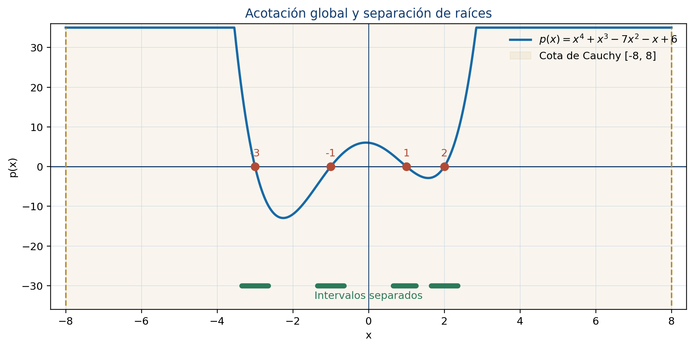
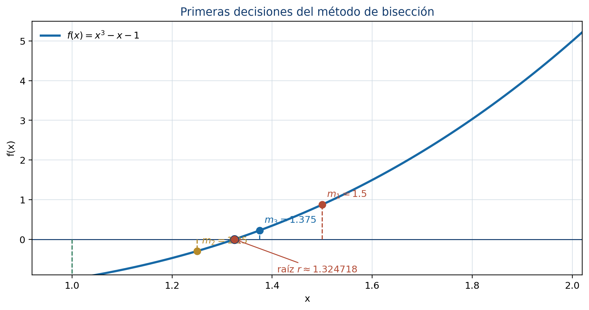

5 Métodos numéricos para la estimación de raíces
Este capítulo desarrolla la Unidad 5 del programa de Álgebra Superior de la Facultad de Ciencias de la UASLP (Universidad Autónoma de San Luis Potosí, Facultad de Ciencias 2011). El Teorema Fundamental del Álgebra garantiza que un polinomio no constante posee raíces complejas, pero no indica dónde se encuentran ni cómo calcularlas. Aquí se estudian herramientas para acotar, contar, separar y aproximar las raíces reales de un polinomio.
Introducción
Sea
\[ p(x)=a_nx^n+a_{n-1}x^{n-1}+\cdots+a_1x+a_0, \qquad a_n\ne0. \]
Resolver \(p(x)=0\) puede significar dos cosas distintas:
- obtener una expresión exacta para cada raíz, cuando es posible;
- producir aproximaciones numéricas con un error controlado.
Para polinomios de grado alto, la segunda vía es indispensable. Un cálculo confiable requiere responder, en orden, cuatro preguntas:
- ¿en qué intervalo pueden estar las raíces reales?;
- ¿cuántas raíces contiene un intervalo?;
- ¿se ha aislado una sola raíz?;
- ¿qué método conviene y qué error tiene la aproximación?
Objetivos
Al terminar el capítulo, el lector podrá:
- obtener cotas para las raíces de un polinomio;
- separar raíces mediante cambios de signo y análisis de intervalos;
- contar exactamente raíces reales con el teorema de Sturm;
- usar la regla de los signos de Descartes y el teorema de Budan-Fourier;
- aplicar bisección, secante y Newton;
- establecer criterios de paro y cotas de error;
- reconocer las condiciones de éxito y los posibles fallos de cada método.
5.1 Acotación de raíces
Una cota de raíces reduce la búsqueda de todo \(\mathbb R\) a un intervalo finito.
Toda raíz compleja \(z\) de \(p\) satisface
\[ |z|\le 1+\max_{0\le k<n}\left|\frac{a_k}{a_n}\right|. \]
En particular, todas las raíces reales pertenecen al intervalo \([-R,R]\), donde \(R\) es el miembro derecho.
Justificación
Sea
\[ M=\max_{0\le k<n}\left|\frac{a_k}{a_n}\right|. \]
Si \(|z|>1+M\), entonces \(|z|-1>M\) y
\[ \begin{aligned} |a_{n-1}z^{n-1}+\cdots+a_0| &\le |a_n|M\left(|z|^{n-1}+\cdots+1\right)\\ &=|a_n|M\frac{|z|^n-1}{|z|-1}\\ &<|a_n||z|^n. \end{aligned} \]
Por la desigualdad triangular, el término principal no puede ser cancelado por la suma de los demás; por tanto, \(p(z)\ne0\). Esto contradice que \(z\) sea raíz.
Ejemplo
Para
\[ p(x)=x^4+x^3-7x^2-x+6, \]
la cota de Cauchy es
\[ R=1+\max\{1,7,1,6\}=8. \]
Así, toda raíz real se encuentra en \([-8,8]\). La factorización
\[ p(x)=(x+3)(x+1)(x-1)(x-2) \]
confirma que las raíces \(-3,-1,1,2\) respetan la cota. La cota no pretende ser exacta: su propósito es garantizar un intervalo de búsqueda.
Cotas mediante división sintética
Cuando \(a_n>0\), la división sintética puede producir cotas más ajustadas:
- si al dividir entre \(x-b\), con \(b>0\), la fila final tiene únicamente números no negativos, entonces \(b\) es cota superior de las raíces reales;
- una regla análoga, con signos alternantes al dividir entre \(x-a\) para \(a<0\), permite obtener una cota inferior.
Estas reglas deben aplicarse con todos los coeficientes, incluidos los ceros correspondientes a potencias ausentes.

5.2 Separación de raíces
Separar una raíz significa encontrar un intervalo que contenga exactamente una raíz real.
Si \(p\) es continuo en \([a,b]\) y
\[ p(a)p(b)<0, \]
entonces existe al menos una raíz en \((a,b)\).
El resultado se deduce del teorema del valor intermedio. Sin embargo, un cambio de signo no garantiza unicidad. Además, una raíz de multiplicidad par puede no producir cambio de signo.
Procedimiento básico
- Obtenga primero una cota global \([-R,R]\).
- Divida el intervalo en subintervalos.
- Evalúe \(p\) en los extremos.
- Marque cada intervalo con cambio de signo.
- Use información adicional para demostrar que cada intervalo contiene una sola raíz.
La unicidad puede establecerse si \(p'\) conserva signo en el intervalo, pues entonces \(p\) es estrictamente monótona. Si \(p'\) tiene ceros, estos puntos críticos ayudan a dividir el intervalo en regiones de monotonía.
Ejemplo
Sea
\[ f(x)=x^3-x-1. \]
Como \(f(1)=-1\) y \(f(2)=5\), existe una raíz en \((1,2)\). Además,
\[ f'(x)=3x^2-1>0\qquad\text{para }x\in[1,2]. \]
Por tanto, \(f\) es estrictamente creciente en ese intervalo y la raíz es única.
Para \(g(x)=(x-1)^2(x+2)\), la raíz \(x=1\) tiene multiplicidad par y la gráfica toca el eje sin cruzarlo. Un muestreo basado solo en cambios de signo puede omitirla. Las raíces de \(\gcd(g,g')\) revelan las raíces múltiples.
5.3 Teorema de Sturm
El teorema de Sturm permite contar exactamente las raíces reales distintas de un polinomio dentro de un intervalo, siempre que los extremos no sean raíces.
Sucesión de Sturm
Para un polinomio \(p\) sin factores múltiples se construye
\[ p_0=p,\qquad p_1=p', \]
y, mediante divisiones euclidianas sucesivas,
\[ p_{k-1}=q_kp_k-p_{k+1}, \]
donde \(p_{k+1}\) es el negativo del residuo. El proceso termina al llegar a una constante no nula.
Para un número real \(t\) que no anule ningún polinomio de la sucesión, sea \(V(t)\) el número de cambios de signo de
\[ p_0(t),p_1(t),\ldots,p_m(t), \]
ignorando los valores cero.
Si \(a<b\) y ninguno es raíz de \(p\), el número de raíces reales distintas de \(p\) en \((a,b)\) es
\[ V(a)-V(b). \]
Ejemplo completo
Para
\[ p(x)=x^3-x, \]
una sucesión de Sturm es
\[ p_0=x^3-x,\qquad p_1=3x^2-1,\qquad p_2=\frac{2}{3}x,\qquad p_3=1. \]
Cuando \(x\to-\infty\), los signos son \((-,+,-,+)\), por lo que \(V(-\infty)=3\). Cuando \(x\to+\infty\), todos los signos son positivos y \(V(+\infty)=0\). En consecuencia, \(p\) tiene tres raíces reales distintas. En efecto,
\[ x^3-x=x(x-1)(x+1). \]
Si el polinomio tiene raíces múltiples, primero se elimina el factor común de \(p\) y \(p'\) para obtener su parte libre de cuadrados; después se aplica Sturm.
5.4 Regla de los signos de Descartes
Sea \(V(p)\) el número de variaciones de signo en la lista de coeficientes no nulos de \(p\), ordenados por potencias descendentes.
El número \(N_+\) de raíces reales positivas de \(p\), contadas con multiplicidad, satisface
\[ N_+=V(p)-2k \]
para algún entero \(k\ge0\). El número de raíces negativas se obtiene aplicando la misma regla a \(p(-x)\).
Ejemplo
Considere
\[ p(x)=x^4+x^3-7x^2-x+6. \]
Los signos de \(p(x)\) son
\[ +,+,-,-,+, \]
con dos variaciones. Por tanto, \(p\) posee dos o cero raíces positivas. Para
\[ p(-x)=x^4-x^3-7x^2+x+6, \]
también hay dos variaciones; por tanto, existen dos o cero raíces negativas. La regla proporciona posibilidades, no un conteo exacto. La factorización muestra que en este caso hay dos positivas y dos negativas.
Teorema de Budan-Fourier
Para \(t\in\mathbb R\), considere la sucesión de derivadas
\[ p(t),p'(t),p''(t),\ldots,p^{(n)}(t) \]
y sea \(W(t)\) su número de variaciones de signo, omitiendo ceros. El número de raíces reales de \(p\) en \((a,b]\), contadas con multiplicidad, es a lo sumo
\[ W(a)-W(b), \]
y difiere de esta cantidad en un número par. Descartes puede interpretarse como un caso límite de esta idea.
La diferencia esencial es:
- Descartes restringe las posibilidades para raíces positivas o negativas;
- Budan-Fourier acota el número de raíces en un intervalo;
- Sturm entrega el conteo exacto de raíces distintas.
5.5 Estimación mediante bisección
La bisección conserva en cada iteración un intervalo cuyos extremos tienen signos opuestos.
Suponga que \(f\) es continua en \([a_0,b_0]\) y \(f(a_0)f(b_0)<0\). En la iteración \(n\) se calcula
\[ m_n=\frac{a_n+b_n}{2}. \]
Se conserva la mitad donde ocurre el cambio de signo. Si \(f(m_n)=0\), el proceso termina exactamente.
Cota de error
Después de \(n\) bisecciones, el intervalo tiene longitud
\[ \frac{b_0-a_0}{2^n}. \]
Si se usa el punto medio como aproximación \(x_n\), entonces
\[ |x_n-r|\le \frac{b_0-a_0}{2^{n+1}}, \]
donde \(r\) es la raíz contenida en el intervalo.
Para garantizar un error menor que \(\varepsilon\) basta elegir
\[ n\ge \left\lceil \log_2\left(\frac{b_0-a_0}{2\varepsilon}\right) \right\rceil. \]
Ejemplo
Para \(f(x)=x^3-x-1\) en \([1,2]\):
| \(n\) | \(a_n\) | \(b_n\) | \(m_n\) | \(f(m_n)\) |
|---|---|---|---|---|
| 1 | 1.000000 | 2.000000 | 1.500000 | 0.875000 |
| 2 | 1.000000 | 1.500000 | 1.250000 | -0.296875 |
| 3 | 1.250000 | 1.500000 | 1.375000 | 0.224609 |
| 4 | 1.250000 | 1.375000 | 1.312500 | -0.051514 |
| 5 | 1.312500 | 1.375000 | 1.343750 | 0.082611 |
Tras cinco pasos la raíz queda encerrada en \([1.3125,1.34375]\).

Ventajas y limitaciones
- Converge siempre bajo sus hipótesis.
- Produce una cota de error explícita.
- Solo necesita evaluaciones de la función.
- Converge linealmente y puede ser más lenta que los métodos abiertos.
- Requiere un cambio de signo, por lo que no detecta directamente raíces de multiplicidad par.
5.6 Estimación mediante el método de la secante
La secante reemplaza la curva por la recta que pasa por \((x_{n-1},f(x_{n-1}))\) y \((x_n,f(x_n))\). La intersección de esa recta con el eje \(x\) es
\[ x_{n+1}=x_n-f(x_n) \frac{x_n-x_{n-1}}{f(x_n)-f(x_{n-1})}. \]
Ejemplo
Con \(f(x)=x^3-x-1\), \(x_0=1\) y \(x_1=2\):
| iteración | aproximación | \(f(x_n)\) | cambio absoluto |
|---|---|---|---|
| 1 | 1.166666667 | -0.578703704 | 0.833333333 |
| 2 | 1.253112033 | -0.285363030 | 0.086445367 |
| 3 | 1.337206446 | 0.053880587 | 0.084094413 |
| 4 | 1.323850096 | -0.003698115 | 0.013356349 |
| 5 | 1.324707937 | -0.000042734 | 0.000857841 |
| 6 | 1.324717965 | \(3.46\times10^{-8}\) | 0.000010029 |
La convergencia es superlineal cerca de una raíz simple, con orden aproximado \(1.618\). No requiere derivadas, pero puede fallar si
\[ f(x_n)-f(x_{n-1}) \]
es cero o extremadamente pequeño. Tampoco conserva necesariamente un intervalo que encierre la raíz.
5.7 Estimación mediante el método de Newton
La recta tangente a \(y=f(x)\) en \((x_n,f(x_n))\) es
\[ y-f(x_n)=f'(x_n)(x-x_n). \]
Al imponer \(y=0\) se obtiene la iteración de Newton:
\[ x_{n+1}=x_n-\frac{f(x_n)}{f'(x_n)}. \]
Ejemplo
Para \(f(x)=x^3-x-1\), con \(x_0=1.5\):
| iteración | \(x_n\) | \(f(x_n)\) | \(|x_n-x_{n-1}|\) |
|---|---|---|---|
| 1 | 1.347826087 | 0.100682173 | 0.152173913 |
| 2 | 1.325200399 | 0.002058362 | 0.022625688 |
| 3 | 1.324718174 | \(9.24\times10^{-7}\) | 0.000482225 |
| 4 | 1.324717957 | \(1.87\times10^{-13}\) | \(2.17\times10^{-7}\) |

Convergencia y elección inicial
Si \(r\) es una raíz simple, \(f\) tiene derivadas continuas cerca de \(r\) y \(x_0\) está suficientemente próximo, Newton converge cuadráticamente:
\[ |e_{n+1}|\approx C|e_n|^2, \qquad e_n=x_n-r. \]
Esto significa que el número de cifras correctas puede aproximadamente duplicarse en cada paso. Sin embargo, Newton puede:
- dividir entre una derivada nula o muy pequeña;
- alejarse de la raíz si \(x_0\) es inadecuado;
- entrar en un ciclo;
- converger lentamente en raíces múltiples.
Raíces múltiples
Si se conoce que \(r\) tiene multiplicidad \(m\), la iteración modificada
\[ x_{n+1}=x_n-m\frac{f(x_n)}{f'(x_n)} \]
puede recuperar convergencia cuadrática.
Evaluación eficiente con Horner
Para un polinomio, cada paso de Newton requiere \(p(x_n)\) y \(p'(x_n)\). El esquema de Horner permite evaluar ambos con costo lineal en el grado, sin calcular todas las potencias de \(x_n\). Por ello, Newton-Horner es una combinación natural para raíces de polinomios.
Criterios de paro y validación
En los métodos iterativos se emplean, de manera conjunta, criterios como
\[ |x_{n+1}-x_n|<\varepsilon_x, \qquad |f(x_{n+1})|<\varepsilon_f, \]
y un número máximo de iteraciones. Ninguno debe confundirse automáticamente con el error verdadero \(|x_n-r|\).
Una aproximación debe acompañarse de:
- el método utilizado;
- los datos iniciales;
- la tolerancia;
- el número de iteraciones;
- el residuo \(|f(x_n)|\);
- una cota de error, si el método la proporciona.
| Método | Datos iniciales | Garantía principal | Velocidad cerca de raíz simple |
|---|---|---|---|
| Bisección | intervalo con cambio de signo | convergencia y cota de error | lineal |
| Secante | dos aproximaciones | no requiere derivada | superlineal |
| Newton | una aproximación y derivada | muy rápido si inicia cerca | cuadrática |
Errores frecuentes
- Interpretar una cota de Cauchy como la ubicación exacta de una raíz.
- Concluir que todo cambio de signo encierra exactamente una raíz.
- Suponer que ausencia de cambio de signo significa ausencia de raíces.
- Contar coeficientes cero como variaciones en la regla de Descartes.
- Cambiar el signo equivocado durante la bisección.
- Usar secante cuando dos valores funcionales son casi iguales.
- Aplicar Newton sin revisar que \(f'(x_n)\) sea segura.
- Detenerse únicamente porque dos iteraciones coinciden en la precisión de la máquina;
- informar una aproximación sin residuo, tolerancia ni criterio de paro.
Ejercicios graduados
Nivel 1
- Obtenga la cota de Cauchy de \(2x^4-3x^2+7x-5\).
- Determine las posibilidades de raíces positivas y negativas de \(x^5-2x^4+x^2-3\) mediante Descartes.
- Compruebe que \(x^3-x-1\) tiene una única raíz en \([1,2]\).
- Realice cuatro iteraciones de bisección para \(x^3-2=0\) en \([1,2]\).
Nivel 2
- Construya la sucesión de Sturm de \(x^3-x\) y cuente sus raíces en \((-2,1/2)\).
- Aísle las raíces reales de \(x^4-5x^2+4\) usando una tabla de signos y monotonía.
- Aproxime la raíz de \(x^3-x-1\) con secante hasta que el cambio sea menor que \(10^{-6}\).
- Aplique Newton a \(x^3-2\) con \(x_0=1.5\) y compare el error con bisección.
Nivel 3
- Investigue por qué Newton converge linealmente para \(f(x)=(x-1)^4\) y aplique la versión modificada.
- Encuentre un ejemplo donde Newton entre en un ciclo de periodo dos.
- Compare Budan-Fourier y Sturm para contar raíces de \(x^4+x^3-7x^2-x+6\) en varios intervalos.
- Diseñe un método híbrido que comience con bisección y cambie a Newton sin abandonar el intervalo seguro.
Proyecto integrador
Elija un polinomio real de grado entre \(4\) y \(7\) con al menos tres raíces reales. Obtenga una cota global, determine las posibilidades dadas por Descartes, cuente y separe las raíces con Sturm, y aproxime cada raíz mediante bisección, secante y Newton. Compare iteraciones, residuos y estabilidad. Presente tablas y gráficas, y distinga con claridad los resultados exactos de las aproximaciones.
Síntesis
La localización precede a la aproximación. Cauchy limita la región de búsqueda; el cambio de signo y la monotonía ayudan a separar; Descartes y Budan-Fourier restringen el número posible de raíces; Sturm entrega un conteo exacto. Bisección ofrece seguridad y error controlado; secante evita derivadas; Newton aprovecha información local para converger con gran rapidez. La elección responsable del método depende de las hipótesis, los datos iniciales y la verificación del residuo.
Referencias del capítulo
La secuencia temática sigue el programa de Álgebra Superior (Universidad Autónoma de San Luis Potosí, Facultad de Ciencias 2011). La teoría de raíces y las reglas algebraicas se apoyan en Cárdenas et al. (1999) y Kurosh (1987). Los métodos iterativos, los criterios de error y el análisis de convergencia se desarrollan con apoyo de Burden y Faires (2011) y Chapra y Canale (2015).